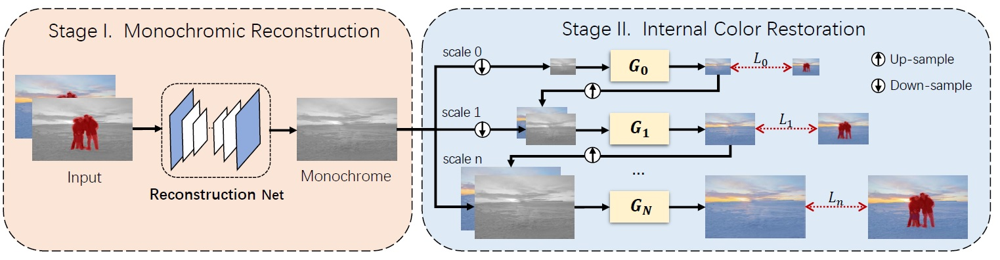

Image Inpainting with External-Internal Learning
and Monochromic Bottleneck
CVPR 2021
Abstract
Although recent inpainting approaches have demonstrated significant improvement with deep neural networks, they still suffer from artifacts such as blunt structures and abrupt colors when filling in the missing regions. To address these issues, we propose an external-internal inpainting scheme with monochromic bottleneck that helps image inpainting models remove these artifacts. In the external learning stage, we reconstruct missing structures and details in the monochromic space to reduce the learning dimension. In the internal learning stage, we propose a novel internal color propagation method with progressive learning strategies for consistent color restoration. Extensive experiments demonstrate that our proposed scheme help image inpainting models produce more structure-preserved and visually compelling results.
Motivation
Early image inpainting networks trained on large datasets usually suffer from the ``color bleeding'' artifacts. Colors in the inpainted area of previous approaches show abrupt discrepancy from non-missing regions. For example, the green and pink color in the first image, and the purple color in the second image are very different from the color distribution of non-missing parts. This distribution gap indicates the possibility of improving inpainting quality by eliminating outliner colors in the missing region. Hence, we are motivated to further improve the color consistency by learning only from the internal color distribution of the non-missing parts. To show the visual quality gain brought by the internal colorization, we apply our method to re-colorize the results of previous inpainting approaches. As in Figure, by strengthening the impact of internal color statistics in the single image, the abrupt colors can be eliminated. However, learning only from internal statistics is inappropriate since external information is significant for content-aware image inpainting. A feasible solution is to set an intermediate bottleneck as a bridge between the external and internal learning. In traditional image reconstruction tasks, many researchers utilize monochromes to learn structures and then directly add color information back. Inspired from these works, we choose monochrome images as the intermediate output. This leads to another advantage that by reducing the output dimension from $R^3$ to $R^1$, the complexity of training is alleviated. We expect that models trained with monochromic bottleneck can reconstruct higher-fidelity structures than original ones.
Architecture
Overview of our external-internal inpainting method. It externally learns to reconstruct structures in the monochromic space via training on large datasets, while implicitly propagates colors within the single test image via internal learning. The colorization loss is only calculated on the unmasked regions.
BibTeX
@inproceedings{
}